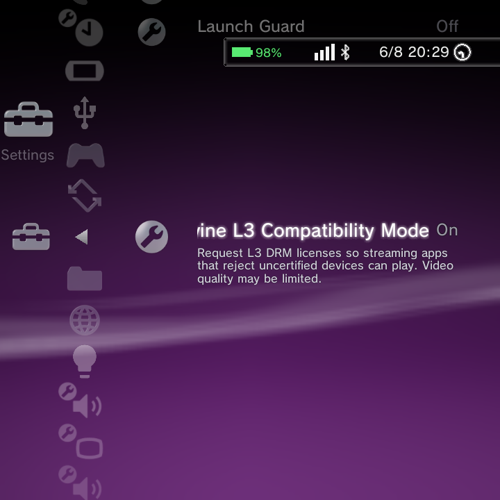

The GammaOS Toolbox is a collection of power-user switches that fine-tune performance, display, audio, and game behaviour. It lives under Settings > GammaOS Toolbox.
Each option is a simple toggle or a small setting. You can leave them all at their defaults and everything works fine, or dip in to squeeze out more performance, change how games are scanned, or free up memory. Some options are device-specific and only appear on hardware that supports them.
Some Toolbox options depend on your exact handheld's hardware. If a switch does not appear on your device, that feature is not available on your panel or chipset.
Display
| Option | What it does |
|---|---|
| Immersive Mode | Hide the system bars so apps and games use the whole screen. |
| Refresh Rate Lock | Pin the display to a fixed refresh rate. |
| Display Tweaks | Extra panel adjustments for your device. |
| Force Client Composition | Force the system to composite frames itself, which can fix rendering glitches. |
| Desktop Fullscreen | Run apps fullscreen in a desktop-style layout. |
| DC Dimming Emulation | Emulate DC dimming to reduce flicker at low brightness. |
| Black Frame Insertion | Insert black frames to sharpen motion on capable panels. |
| CRT Shader | Apply a retro CRT scanline shader to the display. |
| Dual-Stack Display | Enable the dual-stack display mode on supported devices. |
| Phone Taskbar | Show a phone-style taskbar. |
| Dual Taskbar | Show a taskbar on both screens (dual-screen devices). |
If a shader such as the CRT Shader ever makes the screen unreadable, hold Power + Select to disable the system display shader.
Performance and power
| Option | What it does |
|---|---|
| Ultra Low Power Saving | Aggressively cut power use for the longest battery life. |
| Virtual Memory (swap size) | Set a swap file size to give memory-hungry apps and emulators more room (see below). |
| Launch Guard | Guard app launches for a more reliable hand-off. |
Virtual Memory (swap)
Virtual Memory adds a swap file so the device has extra room when RAM is tight. This can help heavier emulators and apps stay stable. Pick a size that suits your device, and the setting is applied on every boot. Set it to off if you would rather not use swap.
Audio
| Option | What it does |
|---|---|
| Multi-Volume | Independent volume control per screen or output. |
For full speaker tuning (EQ bands, Crystalizer, Bass Limiter, Stereo Widener, and more), use GammaEQ in Settings.
Games and controllers
| Option | What it does |
|---|---|
| RetroArch Back Button Override | Drive RetroArch with the Back button: tap Back to open the menu, hold Back to exit (see below). |
| Scan ROM Subfolders | Also scan folders inside your ROM folders when looking for games. |
| Group Multi-Disc (.m3u) | Group multi-disc games into a single entry using .m3u playlists. |
| USB Controller Switch | Handle hot-swapping of USB controllers. |
| Start+Select LED | Toggle the Start+Select LED behaviour. |
RetroArch Back Button Override
This is what lets you drive RetroArch with a single button instead of a hotkey combo:
- Tap Back once to open the RetroArch menu.
- Hold Back to exit RetroArch and return to the Nano home.
- L3 + R3 (click both sticks) also opens the RetroArch menu, using RetroArch's own built-in combo.
The same hold-to-exit works for DraStic. Full details are on the RetroArch Controls page.
Scan ROM Subfolders and Group Multi-Disc
These two change how your library is built:
- Scan ROM Subfolders finds games that are tucked into folders inside your per-system ROM folder. It is off by default (Nano scans one level); turn it on to scan up to six levels deep.
- Group Multi-Disc (.m3u) turns a multi-disc game into one clean entry so you do not see Disc 1, Disc 2, and so on as separate games.
After changing either one, run Settings > Game Settings > Rescan Games. See Adding Games for how to organise your ROM folders.
Miscellaneous
| Option | What it does |
|---|---|
| RGB LED | Control the device RGB LED (see also GammaRGB in Settings). |
| Widevine L3 Compatibility | Fix streaming apps that fail on uncertified devices (see below). |
Widevine L3 Compatibility
Some streaming apps refuse to play or throw an error (for example the Disney+ error) on uncertified devices because of DRM checks. Turn on Widevine L3 Compatibility to improve compatibility with these apps so protected video plays.

Looking for Font Size?
Font Size is not in the Toolbox. To scale the launcher's text, use Font Size in Theme Settings (it scales text live in every theme), or the system Font Size row in Display Settings.